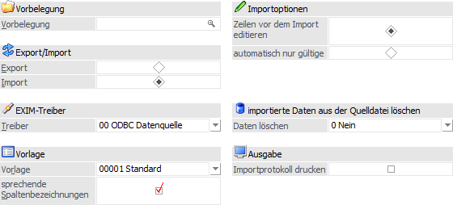
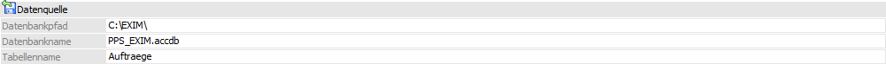

Folgende Einstellungen stehen beim Import zur Verfügung:
Einstellungen - Alle Register

Ø Vorbelegung
Über die Vorbelegung, welche in allen Register zur Verfügung steht, können die Einstellungen eines Ex- bzw. Importvorgangs gespeichert werden. Wurde bereits eine Vorbelegung definiert, kann diese durch Drücken der F9-Taste gesucht werden. Wurde noch keine Vorbelegung definiert, kann diese durch eine Eingabe im Feld "Vorbelegung" angelegt werden. Wurden alle Eingaben durchgeführt, wird die Vorbelegung durch Drücken der F5-Taste bzw. des Buttons "Ok" gespeichert.
Hinweis
Wird mit einer bestehenden Vorbelegung gearbeitet und der Ex- bzw. Import mit Hilfe der Taste F5 bzw. des Buttons "Ok" gestartet, erfolgt eine Sicherheitsabfrage, ob mögliche Änderungen der Einstellungen in der Vorbelegung gespeichert werden sollen.

Ø Export/Import
An dieser Stelle wird "Import" ausgewählt.
Ø EXIM-Treiber
An dieser Stelle erfolgt die Auswahl des ODBC-Treibers, welcher verwendet werden soll. Dieser hat eine direkte Auswirkung auf die möglichen Eingabefelder des Bereichs "Exportziel / Datenquelle".
Achtung
Die angebotenen Treiber sind abhängig von der Installation des PCs , wobei alle vorhandenen 32-Bit ODBC-Treiber zur Verfügung stehen (mesonic ist für die Funktionsfähigkeit bzw. das Vorhandensein der Treiber nicht verantwortlich).
Hinweis
Je nachdem, welche ODBC-Treiber verwendet werden bzw. welche ODBC-Treiber-Version verwendet wird, kann es zu ungewünschten Verhalten des Exports bzw. Imports kommen, wenn Sonderzeichen im Verzeichnisnamen oder im Datenbankname vorkommen. Aus diesem Grund wird, wenn solche Sonderzeichen verwendet werden, eine entsprechende Hinweismeldung ausgegeben:

Achtung - Treiberauswahl
Um sicherzustellen, dass Notizfelder in voller Länge exportiert werden, sollte je nach verwendetem Treiber (Access- oder SQL-Treiber) der erste auswählbare Treiber aus der Auswahlliste verwendet werden. D.h. ist die Auswahlmöglichkeit an Treibern der Reihenfolge nach z.B. "02 - Microsoft Access Driver (*.mdb)", "10 - Microsoft Access Treiber (*.mdb)" und "16 - Driver do Microsoft Access (*.mdb)", dann sollte in diesem Fall "02 - Microsoft Access Driver (*.mdb)" selektiert werden. Andernfalls wird das Notizfeld in der Regel nur mit 255 Zeichen exportiert.
Achtung - Textdateien
Wenn ein Export von Textdateien ausgeführt wird, so wird eine SCHEMA.INI-Datei angelegt, welche die Dateibeschreibung der Exportdatei beinhaltet.
Wenn sich die Vorlage ändert, so hat dieses keine Auswirkung auf die bereits erzeugte SCHEMA.INI-Datei und es würde die Fehlermeldung "Die Tabellen existieren bereits und haben einen anderen Aufbau als die gewählte Vorlage!" ausgegeben werden. Damit der Export wieder "normal" durchgeführt werden kann, muss dieses Dokument entsprechend angepasst oder gelöscht (und damit beim nächsten Export neu angelegt) werden. Ebenso bedarf es, dass die vorhandenen Exportdateien gelöscht werden.
Ø Vorlage
An dieser Stelle wird die Vorlage hinterlegt, welche für den Import verwendet werden soll.
Hinweis
Mit Hilfe der Vorlage wird definiert, welche Felder importiert bzw. vorher exportiert werden sollen. Zusätzlich können Vorbelegungen hinterlegt werden.
Ø sprechende Spaltenbezeichnungen
Ist diese Checkbox aktiv, so erhalten die exportierten Spalten den Namen des ursprünglichen Feldes. Ansonsten werden die Spalten nach den Spaltenbezeichnungen gemäß Datenbank (z.B. C007) benannt.
Ø Zeilen vor dem Import editieren
Wenn die Option "Zeilen vor dem Import editieren" aktiviert wurde, so wird vor dem eigentlichen Import automatisch in einen Prüfbereich (die sogenannte Importvorschau) gewechselt.
Ø automatisch nur gültige importieren
Mit Hilfe dieser Option wird der Import bei Anwahl des Buttons "Ok" sofort durchgeführt. Hierbei werden nur jene Importzeilen berücksichtigt, welche als korrekt erkannt werden.
Hinweis
Werden fehlerhafte Datensätze entdeckt, so gibt die WinLine automatisch ein Fehlerprotokoll aus und gibt darüber hinaus die Möglichkeit, die fehlerhaften Datensätze sofort in einer Bearbeitungstabelle zu korrigieren (siehe "Zeilen vor dem Import editieren").
Ø Importierte Daten aus der Quelldatei löschen
Mit Hilfe dieser Option können die Daten, welche aus externen Quellen in die WinLine importiert werden, nach erfolgtem Import aus der Datenquelle entfernt werden. Hierbei stehen folgende Optionen zur Verfügung:
ü 0 - Nein
Es werden keine Daten
aus der Quelldatei gelöscht.
ü 1 - Ja (Zeilenweise)
Es werden
die bereits importierten Datensätze zeilenweise aus der Quelldatei gelöscht.
Hinweis
Die Option steht nicht zur Verfügung, wenn die Option "Ausprägungen anlegen" (siehe "Einstellungen - Register "Produktionsaufträge" / "einzelner Produktionsauftrag"") aktiviert wurde.
ü 2 - Ja - Gesamter
Produktionsauftrag
Es wird immer anhand der Produktionsauftragsnummer
gelöscht. D.h. wurde auch nur eine Zeile des Auftrags "A" importiert, so werden
nach Abschluss des Imports alle Zeilen des Auftrags "A" aus der Quelldatei
gelöscht. Der Status der Zeilen (nicht importiert, neu hinzugekommen, etc.) ist
irrelevant.
Hinweis
Die Option steht im Register "Kalendereinträge" nicht zur Verfügung.
Achtung
Die importierte Zeile aus der Quelldatei wird nur gelöscht, wenn das Feld "Journalzeile" in der Importvorlage vorhanden ist. Zusätzlich muss die entsprechende Spalte in der Quelldatei mit einem Wert belegt sein.
Ø Importprotokoll drucken
Ein Importprotokoll (Anzahl der importierten Zeilen bzw. Fehlermeldungen) wird bei Aktivierung von dieser Option beim Import angedruckt.
Einstellungen - Register "Produktionsaufträge" / "einzelner Produktionsauftrag"
Ø Aktionscode (Import)
Mit dem Aktionscode kann definiert werden, welche Bestandteile eines Produktionsauftrags exportiert werden sollen:
ü 02 - Produktionsauftrag
Anlage
Mit diesem Aktionscode können Produktionsaufträge importiert
werden. Dabei müssen zumindest die folgenden Felder in der Vorlage (bzw.
in der Datenquelle) vorhanden sein
- Pflichtfelder -
Journalkey,
Produktionsauftragsnummer, Ebene (kann leer bleiben), Artikelnummer (=
Produktionsartikel), Produktionsdatum, Auftragsmenge
ü 03 - Produktionsauftrag
löschen
Mit diesem Aktionscode können bestehende Produktionsaufträge in der
WinLine gelöscht werden. Dabei müssen zumindest die folgenden Felder in der
Vorlage (bzw. in der Datenquelle) vorhanden sein.
- Pflichtfelder
-
Journalkey, Produktionsauftragsnummer, Ebene, Artikelnummer (=
Produktionsartikel), Kurzcode (= die Arbeitsschrittnummer)
ü 06 - Materialentnahme durchführen
(Mat.schein)
Mit diesem Aktionscode können Materialentnahme-Mengen für
bestehende Rohstoffteile importiert werden. Beim Import werden die
Entnahmemengen gleich vom Lager abgebucht. Dabei müssen zumindest die folgenden
Felder in der Vorlage (bzw. in der Datenquelle) vorhanden sein.
-
Pflichtfelder -
Journalkey, Produktionsauftragsnummer, Ebene, Artikelnummer
(=Produktionsartikel), Journalzeile (in der Stückliste), Materialmenge
(=Entnahmemenge), Produktionsdatum (=Entnahmedatum)
Hinweis
Der Funktionsumfang des Materialentnahme-Imports mit diesem Aktionscode entspricht prinzipiell dem Funktionsumfang im Reiter "Teilentnahme" im Fenster "Materialentnahme". Bei der (Teil)-Entnahme wird das Materialentnahme-Flag für den Arbeitsschritt nicht gesetzt. Beim Materialentnahme-Import kann allerdings mehr als die erforderliche Produktionsmenge für ein Stücklistenteil als Materialentnahme importiert und vom Lager abgebucht werden ("Überentnahme").
Hinweis - Ausprägungen
Wenn ein bestimmter Chargenartikel zu einer (noch) nicht ausgeprägten Stücklistenzeile importiert
werden soll (d.h. eine bestimmte Charge soll dafür entnommen werden), muss die Vorlage das Feld "Produktionsflag" enthalten und Zeichen "A" ist in der Zeile in der Importdatei in Spalte
"Produktionsflag" zu erfassen.
ü 05 - Artikeln einfügen plus
Materialentnahme durchführen
Mit diesem
Aktionscode können neue Materialzeilen zu einem bestehenden Produktionsauftrag
hinzufügt werden, die dann gleich entnommen werden (= vom Lager abgebucht).
Dabei müssen zumindest die folgenden Felder in der Vorlage (bzw. in der
Datenquelle) vorhanden sein.
- Pflichtfelder -
Journalkey,
Produktionsauftragsnummer, Ebene, Artikelnummer (=Produktionsartikel),
Journalzeile (in der Stückliste), Materialmenge (=Entnahmemenge), MengeAuftrag
(die Produktionsmenge), Produktionsdatum (=Entnahmedatum)
Hinweis
Beim Journalkey-Wert in der Datenquelle können die letzten drei Stellen den Wert "000" enthalten. Die WinLine sucht die nächste Journalkey-Nummer automatisch aus.
Beispiel: 001-007-003-000; mit diesem Wert kann das neue Teil einem Arbeitsschritt in der 3. Ebene hinzufügt werden.
ü 09 - Schnellendmeldung
Mit diesem Aktionscode können
Produktionsaufträge für die Schnellendmeldung importiert werden.
Einstellungen - Register "Kalendereinträge"
Ø Aktionscode (Import)
Mit dem Aktionscode kann definiert werden, ob IST-Zeiten importiert oder gelöscht werden:
ü 00 - IST-Zeiten importieren
ü 01 - IST-Zeiten löschen
Hinweis 1
Bei dem Import von IST-Zeiten für einen bestimmten Arbeitsschritt von einem Produktionsauftrag muss das Feld "Prod.Auftragsnummer od. Projektnummer" bzw. auch "Ebene / AS bei IST-Zeiten" in der Vorlage vorhanden und angegeben werden.
Hinweis 2
Es können nur erfasste IST-Zeiten gelöscht werden, die noch nicht endgemeldet wurden. Importierte IST-Zeiten sind noch in der Endmeldung veränderbar und gelten noch nicht als endgültig (=endgemeldet).
Datenquelle - alle Register

Ø Beschreibung von Datei bzw. Datenbank
In Abhängigkeit der am PC installierten ODBC-Treiber werden in diesem Bereich Felder angezeigt, in denen Ziel (Bereich in den die Daten aus der WinLine kommend abgespeichert werden) bzw. Quelle (Bereich aus dem die Daten in die WinLine importiert werden) zu beschreiben sind.
Achtung
Der ODBC-Treiber kann zwar innerhalb von Access-Dateien und SQL-Datenbanken Tabellen erzeugen und diese Tabellen mit Datensätzen füllen, er kann aber nicht die Access-Datei bzw. die Datenbank selbst erstellen. Diese muss bereits vorhanden sein.